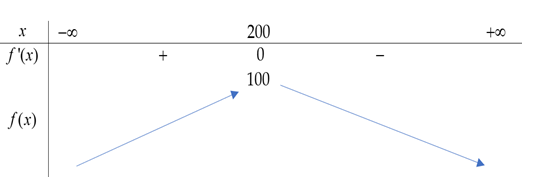
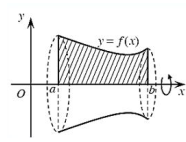
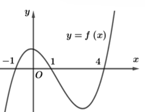
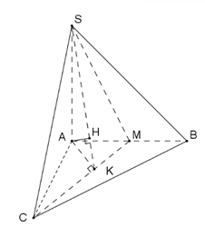

ĐỀ THI TOÁN - ĐỀ SỐ 4 HOT
Phần I: Trắc Nghiệm Nhiều Lựa Chọn
Câu 1:
Một doanh nghiệp sản xuất với số lượng là \( x \) sản phẩm, \( x \in \mathbb{N} \) và thu được lợi nhuận \( f(x) \) được biểu thị bởi bảng biến thiên như sau. Hỏi doanh nghiệp sản xuất bao nhiêu sản phẩm trở đi thì lợi nhuận bắt đầu giảm?
Chọn đáp án:
Lời giải:
Từ bảng biến thiên, lợi nhuận \( f(x) \) đạt cực đại tại \( x = 200 \), và bắt đầu giảm khi \( x > 200 \). Do đó, từ \( x = 201 \) trở đi, lợi nhuận giảm.
Đáp án: A. 201.
Câu 2:
Cho hàm số \( y = f(x) \) có bảng biến thiên trên đoạn \( [0; 3] \) như sau:

Giá trị nhỏ nhất của hàm số \( y = f(x) \) trên đoạn \( [0; 3] \) là
Chọn đáp án:
Lời giải:
Từ bảng biến thiên, giá trị nhỏ nhất của \( f(x) \) trên đoạn \( [0; 3] \) là -4.
Đáp án: A. -4.
Câu 3:
Tìm tập xác định của hàm số \( y = \log_{2024}(3 - x) \).
Chọn đáp án:
Lời giải:
Điều kiện xác định: \( 3 - x > 0 \Leftrightarrow x < 3 \).
Suy ra tập xác định của hàm số là \( D = (-\infty; 3) \).
Đáp án: A.
Câu 4:
Cho hàm số \( y = f(x) \) xác định trên \( \mathbb{R} \) và có đạo hàm \( f'(x) = x^{2024}(3 - x), \forall x \in \mathbb{R} \). Hàm số đã cho có bao nhiêu điểm cực trị?
Chọn đáp án:
Lời giải:
Đạo hàm \( f'(x) = x^{2024}(3 - x) \). Tìm điểm cực trị bằng cách giải \( f'(x) = 0 \):
\( x^{2024}(3 - x) = 0 \Leftrightarrow x = 0 \) hoặc \( x = 3 \).
- Tại \( x = 0 \), \( f'(x) \) không đổi dấu (do \( x^{2024} \) có số mũ chẵn, luôn dương hoặc bằng 0), nên \( x = 0 \) không phải điểm cực trị.
- Tại \( x = 3 \), \( f'(x) \) đổi dấu (do \( 3 - x \) đổi dấu), nên \( x = 3 \) là điểm cực trị.
Vậy hàm số có 1 điểm cực trị.
Đáp án: D.
Câu 5:
Cho hai biến cố độc lập \( A \) và \( B \). Biết \( P(A) = \frac{1}{4} \), \( P(A \cup B) = \frac{1}{2} \). Tính \( P(B) \).
Chọn đáp án:
Lời giải:
Vì \( A \) và \( B \) độc lập, ta có \( P(A \cap B) = P(A)P(B) \).
Công thức: \( P(A \cup B) = P(A) + P(B) - P(A \cap B) \).
Thay số: \( \frac{1}{2} = \frac{1}{4} + P(B) - \frac{1}{4}P(B) \).
Rút gọn: \( \frac{1}{2} = \frac{1}{4} + \frac{3}{4}P(B) \).
\( \frac{3}{4}P(B) = \frac{1}{4} \Rightarrow P(B) = \frac{1}{3} \).
Đáp án: D.
Câu 6:
Cho hình chóp \( S.ABC \) có \( SA \perp (ABC) \), \( SA = AB = 2a \), tam giác \( ABC \) vuông tại \( B \). Khoảng cách từ \( A \) đến mặt phẳng \( (SBC) \) bằng
Chọn đáp án:
Lời giải:
Gọi \( H \) là trung điểm cạnh \( SB \).
Ta có: \( AH \perp BC \) (do \( BC \perp (SAB) \)) và \( AH \perp SB \), nên \( AH \perp (SBC) \).
Do đó, khoảng cách từ \( A \) đến mặt phẳng \( (SBC) \) là \( AH \).
Tính \( SB \): Trong tam giác \( SAB \), \( SA \perp AB \), nên \( SB = \sqrt{SA^2 + AB^2} = \sqrt{(2a)^2 + (2a)^2} = 2a\sqrt{2} \).
Vì \( H \) là trung điểm \( SB \), nên \( AH = \frac{SB}{2} = \frac{2a\sqrt{2}}{2} = a\sqrt{2} \).
Đáp án: B.
Câu 7:
Biết phương trình \( \sin x = m \) có một họ nghiệm \( x = \frac{\pi}{5} + k2\pi \) với \( k \in \mathbb{Z} \). Họ nghiệm còn lại của phương trình đã cho là biểu thức nào sau đây?
Chọn đáp án:
Lời giải:
Phương trình \( \sin x = m \) có nghiệm \( x = \frac{\pi}{5} + k2\pi \), tức là \( \sin \frac{\pi}{5} = m \).
Họ nghiệm tổng quát của \( \sin x = m \) là \( x = \arcsin m + k2\pi \) hoặc \( x = \pi - \arcsin m + k2\pi \).
Vì \( \arcsin m = \frac{\pi}{5} \), họ nghiệm còn lại là:
\( x = \pi - \frac{\pi}{5} + k2\pi = \frac{4\pi}{5} + k2\pi \).
Đáp án: C.
Câu 8:
Cho hàm số \( y = f(x) \) có đồ thị là đường cong trong hình dưới đây:
Hàm số đã cho đồng biến trên khoảng nào dưới đây?
Chọn đáp án:
Lời giải:
Từ đồ thị (hình 4.4), hàm số \( f(x) \) đồng biến trên khoảng \( (-\infty; -1) \), vì trên khoảng này giá trị hàm tăng khi \( x \) tăng.
Đáp án: D.
Câu 9:
Cho hình hộp \( ABCD.A'B'C'D' \), có đáy \( ABCD \) là hình bình hành tâm \( O \). Khi đó \( 2 \cdot \overrightarrow{AO} \) bằng vector nào sau đây?

Chọn đáp án:
Lời giải:
Vì \( ABCD \) là hình bình hành tâm \( O \), ta có \( \overrightarrow{AO} = \frac{1}{2}(\overrightarrow{AB} + \overrightarrow{AD}) \).
Do đó, \( 2 \cdot \overrightarrow{AO} = \overrightarrow{AB} + \overrightarrow{AD} = \overrightarrow{AC} \).
Đáp án: D.
Câu 10:
[Câu hỏi không đầy đủ trong tài liệu]
Lưu ý: Câu hỏi này không được cung cấp đầy đủ trong tài liệu. Vui lòng kiểm tra lại đề thi.
Câu 11:
Đường tiệm cận ngang của đồ thị hàm số \( y = \frac{2x + 1}{x + 1} \) là
Chọn đáp án:
Lời giải:
Xét \( y = \frac{2x + 1}{x + 1} \).
Khi \( x \to \pm \infty \), \( y \approx \frac{2x}{x} = 2 \).
Do đó, đường tiệm cận ngang là \( y = 2 \).
Đáp án: A.
Câu 12:
Đạo hàm của hàm số \( y = 3^x \) là
Chọn đáp án:
Lời giải:
Hàm số \( y = 3^x \).
Đạo hàm: \( y' = 3^x \cdot \ln 3 \).
Đáp án: D.
Phần II: Trắc Nghiệm Đúng/Sai
Câu 1:
Theo báo cáo của một cơ sở sản xuất nước tinh khiết, nếu mỗi ngày cơ sở này sản xuất \( x (m^3) \) nước tinh khiết thì chi phí sản xuất là:
Chọn đáp án cho từng phát biểu:
a)
b)
c)
d)
Lời giải:
Theo tài liệu, chi phí sản xuất được xác định là \( C(x) = 0.0003x^2 + 0.15x + 3 \).
- Phát biểu a: Đúng.
- Phát biểu b, c, d: Sai, vì chúng mâu thuẫn với công thức đúng.
Đáp án: a) Đúng, b) Sai, c) Sai, d) Sai.
Câu 2:
Cho hình chóp \( S.ABC \) có mặt bên \( (SAB) \) vuông góc với mặt đáy và tam giác \( SAB \) đều cạnh \( 2a \). Biết tam giác \( ABC \) vuông tại \( C \) và cạnh \( AC = a\sqrt{3} \). Gọi \( H \) là trung điểm của \( AB \). Các mệnh đề sau đúng hay sai?
Chọn đáp án cho từng phát biểu:
a)
b)
c)
d)
Lời giải:
a) Đúng: \( \triangle SAB \) đều, \( H \) là trung điểm \( AB \Rightarrow SH \perp AB \). Vì \( (SAB) \perp (ABC) \) và \( SH \subset (SHC) \), suy ra \( (SHC) \perp (ABC) \).
b) Sai: Thể tích khối chóp \( V_{S.ABC} = \frac{1}{3} \cdot \frac{AC \cdot CB}{2} \cdot SH = \frac{1}{3} \cdot \frac{a\sqrt{3} \cdot a}{2} \cdot \sqrt{3}a = \frac{1}{2}a^3 \neq \frac{a^3}{6} \).
c) Sai: Khoảng cách \( d(C, (SAB)) = CM = \frac{AC \cdot CB}{AB} = \frac{a\sqrt{3} \cdot a}{2a} = \frac{\sqrt{3}}{2}a \neq \frac{a\sqrt{3}}{3} \).
d) Đúng: Theo ý a, \( SH \perp AB \), và \( AB \subset (ABC) \), suy ra \( SH \perp (ABC) \).
Đáp án: a) Đúng, b) Sai, c) Sai, d) Đúng.
Câu 3:
Phòng quản lý đào tạo trường Đại học Kinh tế Quốc dân thống kê số giờ làm thêm của một nhóm sinh viên năm thứ tư của trường thu được kết quả như bảng sau:

Các mệnh đề sau đúng hay sai?
Chọn đáp án cho từng phát biểu:
a)
b)
c)
d)
Lời giải:
a) Sai: Số giờ trung bình: \( \bar{x} = \frac{6 \cdot 10.5 + 12 \cdot 13.5 + 4 \cdot 16.5 + 2 \cdot 19.5 + 1 \cdot 22.5}{25} = 14.1 \neq 16.5 \).
b) Đúng: Giá trị đại diện của nhóm \( [9; 12) \) là \( \frac{9 + 12}{2} = 10.5 \).
c) Sai: Tứ phân vị thứ ba \( Q_3 = 15 + \frac{\frac{3 \cdot 25}{4} - (6 + 12)}{4} \cdot (18 - 15) = \frac{249}{16} \approx 15.563 \neq 15.65 \).
d) Sai: Trung vị là \( x_{13} \), thuộc nhóm \( [12; 15) \), không phải \( [15; 18) \).
Đáp án: a) Sai, b) Đúng, c) Sai, d) Sai.
Câu 4:
Cho hàm số \( f(x) = \frac{ax + b}{cx + d} \) với \( a, b, c, d \in \mathbb{R}, c \neq 0 \) có đồ thị hàm số \( y = f'(x) \) nhận đường thẳng \( x = -1 \) làm tiệm cận đứng. Biết rằng giá trị lớn nhất của hàm số \( y = f(x) \) trên đoạn \( [-3; -2] \) bằng 8. Xét tính đúng sai của các mệnh đề sau:
Chọn đáp án cho từng phát biểu:
a)
b)
c)
d)
Lời giải:
Đồ thị \( y = f'(x) \) có tiệm cận đứng tại \( x = -1 \), suy ra \( c + d = 0 \Rightarrow d = -c \).
Đạo hàm: \( f'(x) = \frac{ad - bc}{(cx + d)^2} \). Vì \( d = -c \), ta có \( f'(x) = \frac{ad - bc}{(cx - c)^2} = \frac{3c^2}{(c(x - 1))^2} \).
Đồ thị \( f'(x) \) qua điểm \( (0, 3) \), suy ra \( \frac{ad - bc}{d^2} = 3 \). Với \( d = -c \), ta được \( a + b = -3c \).
Giá trị lớn nhất của \( f(x) \) trên \( [-3; -2] \) là \( f(-2) = 8 \). Thay vào, ta tìm được \( f(x) = \frac{7x - 10}{x - 1} \).
a) Đúng: \( f'(x) = \frac{3}{(x - 1)^2} > 0 \), hàm đồng biến trên \( [2; 4] \), nên giá trị nhỏ nhất là \( f(2) = \frac{7 \cdot 2 - 10}{2 - 1} = 4 \).
b) Sai: \( f(-3) = \frac{7(-3) - 10}{-3 - 1} = \frac{31}{4} \neq 8 \).
c) Sai: \( f'(x) > 0 \), hàm đồng biến trên \( (-1; +\infty) \), không nghịch biến.
d) Đúng: \( \lim_{x \to \pm \infty} f'(x) = \lim_{x \to \pm \infty} \frac{3}{(x - 1)^2} = 0 \), nên \( y = 0 \) là tiệm cận ngang của \( f'(x) \).
Đáp án: a) Đúng, b) Sai, c) Sai, d) Đúng.
Phần III: Trắc Nghiệm Trả Lời Ngắn
Câu 1:
Hai con tàu \( A \) và \( B \) đang ở cùng một vĩ tuyến và cách nhau 6 hải lý. Cả hai tàu đồng thời cùng chuyển động thẳng đều với vận tốc lần lượt là 5 hải lý/giờ và 7 hải lý/giờ theo hai hướng đối nhau. Tính thời gian (giờ) để khoảng cách giữa hai tàu là nhỏ nhất (làm tròn đến hàng phần trăm).

Nhập đáp án:
Lời giải:
Gọi \( t \) là thời gian (giờ). Khoảng cách giữa hai tàu sau \( t \) giờ là:
\( d^2 = (5t)^2 + (6 - 7t)^2 = 25t^2 + 36 - 84t + 49t^2 = 74t^2 - 84t + 36 \).
Đặt \( f(t) = 74t^2 - 84t + 36 \). Tìm giá trị nhỏ nhất của \( f(t) \):
Đỉnh parabol tại \( t = \frac{84}{2 \cdot 74} = \frac{84}{148} \approx 0.57 \).
Khi \( t = \frac{84}{148} \), \( f(t) = \frac{450}{37} \), là giá trị nhỏ nhất của \( d^2 \).
Đáp án: 0.57.
Câu 2:
Có ba lực cùng tác động vào một vật. Hai trong ba lực này hợp với nhau một góc \( 100^\circ \) và có độ lớn lần lượt là 25 N và 12 N. Lực thứ ba vuông góc với mặt phẳng tạo bởi hai lực đã cho và có độ lớn 4 N. Tính độ lớn của hợp lực của ba lực trên (làm tròn đến hàng phần chục).
Nhập đáp án:
Lời giải:
Gọi \( \vec{F_1} = 25 \) N, \( \vec{F_2} = 12 \) N, \( \vec{F_3} = 4 \) N. Góc giữa \( \vec{F_1} \) và \( \vec{F_2} \) là \( 100^\circ \), và \( \vec{F_3} \perp (\vec{F_1}, \vec{F_2}) \).
Hợp lực: \( |\vec{F_1} + \vec{F_2} + \vec{F_3}|^2 = |\vec{F_1}|^2 + |\vec{F_2}|^2 + |\vec{F_3}|^2 + 2\vec{F_1} \cdot \vec{F_2} \).
Tính: \( |\vec{F_1}|^2 = 25^2 = 625 \), \( |\vec{F_2}|^2 = 12^2 = 144 \), \( |\vec{F_3}|^2 = 4^2 = 16 \).
\( \vec{F_1} \cdot \vec{F_2} = 25 \cdot 12 \cdot \cos 100^\circ \approx 25 \cdot 12 \cdot (-0.1736) \approx -52.08 \).
\( |\vec{F_1} + \vec{F_2} + \vec{F_3}|^2 = 625 + 144 + 16 + 2 \cdot (-52.08) \approx 780.84 \).
\( |\vec{F_1} + \vec{F_2} + \vec{F_3}| \approx \sqrt{780.84} \approx 5.1 \) N.
Đáp án: 5.1.
Câu 3:
Dân số trung bình sơ bộ năm 2021 của tỉnh Vĩnh Phúc là 1.191.782 người, tăng 1,75% so với năm 2020. Hỏi với tốc độ tăng dân số được duy trì mức 1,75% một năm thì đến năm bao nhiêu dân số tỉnh Vĩnh Phúc lần đầu vượt 1.880.000 người?
Nhập đáp án:
Lời giải:
Dân số năm 2020: \( P_0 = \frac{1.191.782}{1 + 0.0175} \approx 1.171.285 \).
Dân số năm \( n \) sau 2020: \( P_n = P_0 \cdot (1 + 0.0175)^n \).
Tìm \( n \) sao cho \( P_n > 1.880.000 \):
\( 1.171.285 \cdot (1.0175)^n > 1.880.000 \).
\( (1.0175)^n > \frac{1.880.000}{1.171.285} \approx 1.605 \).
\( n \cdot \ln 1.0175 > \ln 1.605 \Rightarrow n > \frac{\ln 1.605}{\ln 1.0175} \approx 27.3 \).
Vì \( n \) là số nguyên, thử \( n = 28 \): Năm 2048 (\( 2020 + 28 \)).
Đáp án: 2048.
Câu 4:
Hai bạn Nga và Nhung chơi trò tung xúc xắc. Mỗi bạn tung 1 con xúc xắc 3 lần, ai có tổng số chấm 3 lần gieo lớn hơn thì thắng. Nga chơi trước và được 14 chấm. Khi đó, xác suất để Nhung thắng Nga là \( \frac{a}{b} \) (với \( a, b \) là số nguyên dương và \( \frac{a}{b} \) là phân số tối giản). Tính \( a + b \).
Nhập đáp án:
Lời giải:
Không gian mẫu: \( 6^3 = 216 \).
Nhung thắng khi tổng số chấm \( S = x_1 + x_2 + x_3 > 14 \), với \( 1 \leq x_i \leq 6 \).
- \( S = 15 \): Các bộ \((3, 6, 6)\): 3 cách; \((4, 5, 6)\): \( 3! = 6 \) cách; \((5, 5, 5)\): 1 cách. Tổng: 10 cách.
- \( S = 16 \): \((4, 6, 6)\): 3 cách; \((5, 5, 6)\): 3 cách. Tổng: 6 cách.
- \( S = 17 \): \((5, 6, 6)\): 3 cách.
- \( S = 18 \): \((6, 6, 6)\): 1 cách.
Tổng số cách: \( 10 + 6 + 3 + 1 = 20 \).
Xác suất: \( \frac{20}{216} = \frac{5}{54} \).
\( a = 5 \), \( b = 54 \), \( a + b = 5 + 54 = 59 \).
Đáp án: 59.
Câu 5:
Cho hình chóp \( S.ABC \) có đáy \( ABC \) là tam giác đều cạnh bằng 2, \( SA \) vuông góc với mặt phẳng \( (ABC) \); góc giữa đường thẳng \( SB \) và mặt phẳng \( (ABC) \) bằng \( 60^\circ \). Gọi \( M \) là trung điểm của cạnh \( AB \). Tính khoảng cách từ điểm \( B \) đến mặt phẳng \( (SCM) \), kết quả làm tròn đến hàng phần trăm.
Nhập đáp án:
Lời giải:
Góc giữa \( SB \) và \( (ABC) \) là \( \angle SBA = 60^\circ \). Vì \( SA \perp (ABC) \), tam giác \( SAB \) vuông tại \( A \).
\( SA = AB \cdot \tan 60^\circ = 2 \cdot \sqrt{3} = 2\sqrt{3} \).
Gọi \( K \) là hình chiếu của \( A \) lên \( CM \), \( H \) là hình chiếu của \( A \) lên \( SK \).
Trong \( \triangle AMC \), diện tích \( \frac{1}{2} \cdot AK \cdot CM = \frac{\sqrt{3}}{2} \Rightarrow AK = 1 \).
Trong \( \triangle SAK \) vuông tại \( A \): \( \frac{1}{AH^2} = \frac{1}{SA^2} + \frac{1}{AK^2} = \frac{1}{(2\sqrt{3})^2} + \frac{1}{1^2} = \frac{13}{12} \).
\( AH = \frac{2\sqrt{39}}{13} \approx 0.96 \).
Vì \( MA = MB \), suy ra \( d(B, (SCM)) = d(A, (SCM)) = AH \approx 0.96 \).
Đáp án: 0.96.
Câu 6:
Cho hàm số \( f(x) = x(x-3)^2 \). Tính số nghiệm thực của phương trình \( \underbrace{f(f \ldots f(x)))}_{8 \text{ lần }} = 0 \).

Nhập đáp án:
Lời giải:
Dựa vào đồ thị ta có pphương trình \( f(x) = 0 \) có nghiệm \( x = 0 \) và \( x = 3 \).
Suy rara \( f(f(x)) = 0 \), ta cần \( f(x) = 0 \) hoặc \( f(x) = 3 \) Thực hiện vòng lặp ta được kết quả 3281 nghiệmnghiệm.
Đáp án: 3281.